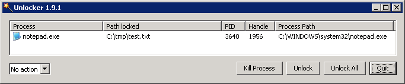

All you can do with a shell script is make it worse. But since this is Python, you can make it better.
— Guido van Rossum
#!/usr/bin/env python  import subprocess, sys
cmd = 'ls -l'
retcode = subprocess.call(cmd, shell=True)
import subprocess, sys
cmd = 'ls -l'
retcode = subprocess.call(cmd, shell=True)  if retcode != 0: sys.exit(retcode)
if retcode != 0: sys.exit(retcode)
Python Shebang Line。這個寫法會比 #!/usr/bin/python 來得好，因為前者會從 $PATH 找出目前採用的 Python interpreter，後者則是寫死絕對路徑。
| |
subprocess.call() 的回傳值，直接就是 cmd 執行過後的 exit status。（要注意在 Windows 下，.bat 的副檔名不能省略，但 .exe 好像就沒這個問題）
|
執行外部程式，或用 Python 來寫 Shell Scripts
Python 2.4 新增了 subprocess 這個 module，可以用來執行外部程式（也就是 spawn 一個 subprocess 或 child process），它的出現是為了取代舊有的 module 或 function，包括 os.system()、os.spawn*()、os.popen*()、popen2.* 與 commands.*。
最常用的就是 subprocess.call()，它可以帶參數執行外部程式，等外部程式結束之後再回傳 return code，可以用來判斷執行結果是成功還是失敗：
subprocess.call(args, executable=None, shell=False)其中 args 可以傳入 sequence of strings 或單一個 string。注意 subprocess 的某些行為在 Windows 與 Unix 下會有差異：
>>> subprocess.call('echo Hello World')
Traceback (most recent call last):
File "<stdin>", line 1, in <module>
File "/usr/lib/python2.6/subprocess.py", line 470, in call
return Popen(*popenargs, **kwargs).wait()
File "/usr/lib/python2.6/subprocess.py", line 623, in __init__
errread, errwrite)
File "/usr/lib/python2.6/subprocess.py", line 1141, in _execute_child
raise child_exception
OSError: [Errno 2] No such file or directory
>>> subprocess.call(['echo', 'Hello World'])  Hello World
Hello World  0
0  >>>
>>> subprocess.call('echo Hello World', shell=True)
>>>
>>> subprocess.call('echo Hello World', shell=True)  Hello World
0
>>> subprocess.call(['echo', 'Hello World'], shell=True)
Hello World
0
>>> subprocess.call(['echo', 'Hello World'], shell=True)  0
>>> subprocess.call(['echo Hello World', 'shell arguments'], shell=True)
Hello World
0
0
>>> subprocess.call(['echo Hello World', 'shell arguments'], shell=True)
Hello World
0
shell=False 時（預設），單一個 string 的 args 會被解讀成 executable（就這個例子而言，echo Hello World 這個執行檔並不存在）；這個用法只適用於沒有 argument 的情況。
| |
要執行的程式不存在時，會丟出 OSError。
| |
shell=False 時，把 executable 跟 argument 拆開，就可以避開上述的問題。
| |
| 外部程式的輸出會直接寫到 standard output。 | |
| 這是外部程式的 return code，可用來判斷執行結果是成功還是失敗。 | |
shell=True 時，executable 預設是 /bin/sh（因此 args 本身或第一個 item 就不會被視為 executable），單一個 string 的 args 會被視為 command string 整個丟給 shell 執行。
| |
shell=True 時，只有第一個 item 會被視為 command string 丟給 shell 執行，但剩下的 item 則當做 shell 的 argument。就這個例子而言，echo 沒有接任何 argument（'Hello World' 是給 shell 用的），因此 standard output 沒有輸出任何東西。
|
|
|
什麼時候要用
shell=True？又使用 shell=True 時要注意什麼？從下面的執行結果來看，使用 但像 上面提到
因此透過 |
>>> subprocess.call('echo Hello World')
Hello World
0
>>> subprocess.call('echo Hello World', shell=True)
Hello World
0
>>> subprocess.call(['echo', 'Hello World'])
Hello World
0
>>> subprocess.call(['echo', 'Hello World'], shell=True)
"Hello World"
0
>>> subprocess.call('echo %COMSPEC%')
%COMSPEC%
0
>>> subprocess.call('echo %COMSPEC%', shell=True)
C:\Windows\system32\cmd.exe
0
>>> subprocess.call(['echo', '%COMSPEC%'], shell=True)
C:\Windows\system32\cmd.exe
0
>>> subprocess.call(r'c:\Program Files\Java\jre7\bin\java.exe -version')
java version "1.7.0"
Java(TM) SE Runtime Environment (build 1.7.0-b147)
Java HotSpot(TM) 64-Bit Server VM (build 21.0-b17, mixed mode)
0
>>> subprocess.call(r'c:\Program Files\Java\jre7\bin\java.exe -version', shell=True)
'c:\Program' is not recognized as an internal or external command, operable program or batch file.
1
>>> subprocess.call(r'"c:\Program Files\Java\jre7\bin\java.exe" -version', shell=True)  java version "1.7.0"
Java(TM) SE Runtime Environment (build 1.7.0-b147)
Java HotSpot(TM) 64-Bit Server VM (build 21.0-b17, mixed mode)
0
>>> subprocess.call('del')
java version "1.7.0"
Java(TM) SE Runtime Environment (build 1.7.0-b147)
Java HotSpot(TM) 64-Bit Server VM (build 21.0-b17, mixed mode)
0
>>> subprocess.call('del')  Traceback (most recent call last):
File "<stdin>", line 1, in <module>
File "C:\Python27\lib\subprocess.py", line 493, in call
return Popen(*popenargs, **kwargs).wait()
File "C:\Python27\lib\subprocess.py", line 679, in __init__
errread, errwrite)
File "C:\Python27\lib\subprocess.py", line 893, in _execute_child
startupinfo)
WindowsError: [Error 2] The system cannot find the file specified
>>> subprocess.call('del', shell=True)
The syntax of the command is incorrect.
1
Traceback (most recent call last):
File "<stdin>", line 1, in <module>
File "C:\Python27\lib\subprocess.py", line 493, in call
return Popen(*popenargs, **kwargs).wait()
File "C:\Python27\lib\subprocess.py", line 679, in __init__
errread, errwrite)
File "C:\Python27\lib\subprocess.py", line 893, in _execute_child
startupinfo)
WindowsError: [Error 2] The system cannot find the file specified
>>> subprocess.call('del', shell=True)
The syntax of the command is incorrect.
1
shell=False 時，並不會像在 Unix 一樣，將單一個 string 的 args 解讀成 executable。
| |
shell=True 時，executable 預設是環境變數 COMSPEC 的內容，例如 "C:\Windows\system32\cmd.exe"。
| |
看起來 args 的型式（單一個 string 或 sequence of strings）或 shell 的值，都對執行結果沒有影響？
| |
| 為什麼 Hello World 兩側多了雙引號？ | |
shell=True 時，environment variable 才會被展開（不論 args 的型式為何）。
| |
簡單歸納一下，subprocess.call() 的行為並不會受 args 的型式影響，但 shell=True 與 shell=False 則有差異。
| |
讓人比較不解的是，為什麼這個例子可以執行，反倒是加了 shell=True 之後才出狀況？
| |
| 像平常在 DOS prompt 輸入的一樣，在含有空白字元的路徑兩側加上雙引號即可。 | |
跟在 Unix 一樣，像 del、dir 這類 built-in command，還是得透過 shell 來執行才行。
|
從上面的測試結果來看，subprocess.call() 的行為在 Unix 與 Windows 下存在著一些差異。不過下面兩種用法在不同 OS 下的行為是比較一致的：
-
subprocess.call(sequence_of_strings)- 將個別的 argument 拆開，不用考慮 quoting 或 backslash escaping 等問題。 -
subprocess.call(command_string, shell=True)- 其中 command_string 的寫法要跟平常在 shell prompt 裡輸入指令時一樣，同樣要考慮 quoting 或 backslash escaping 的問題。
|
|
之前曾遇到某個路徑含有空白的自解安裝程式（SFX），用 subprocess.Popen(installer) 執行時會丟出 "[Error 193] %1 is not a valid Win32 application" 的錯誤，改放到不含空白的路徑下就沒事。根據上面的結果，改寫成 subprocess.Popen([installer]) 就可以了。 |
|
|
除了
用 Python 來寫 shell script 時， 不過要注意 subprocess.check_output() 的原始碼 |
非同步（asynchronously）執行外部程式
上面的 subprocess.call() 雖然好用，不過控制權必須等外部程式結束之後才會回到 Python 程式。如果要非同步執行外部程式，或想在執行期與 child process 溝通，就必須直接使用 subprocess.call() 底層的 subprocess.Pope 才行。
事實上，subprocess.call() 的參數與 Popen 的 constructor 完全一樣，只是 subprocess.call() 內部在取得 Popen 的 instance 之後（可以將它視為與 child process 溝通的介面），會呼叫 Popen.wait() 等待外部程式執行結束，然後傳回 return code 而已。
process = subprocess.Popen(args, executable=None, shell=False)在 Ubuntu 下，以 GNOME calculator 做簡單的測試：
>>> import subprocess
>>> process = subprocess.Popen('gcalctool')
>>> process.wait()
0
>>> process = subprocess.Popen('gcalctool')
>>> process.poll()
>>> process.poll()
0| 叫出計算機。 | |
| 程式會卡在這裡，直到手動將計算機關掉為止，才會有 return code 傳回來。 | |
重新開啟計算機，呼叫 process.poll() 傳回 None，表示還在執行。
| |
將計算機關掉後，再呼叫 process.poll() 一次，傳回 return code。
|
整理一下 Popen 幾個跟 child process 互動的方法：
-
Popen.poll()- 檢查 child process 是否還在執行。注意這個方法並不會回傳True/False，而是用None來表示程式還在執行，如果程式已經結束則會傳回 return code。 -
Popen.wait()- 等 child process 結束之後，才傳回 return code，並將控制權交回 Python。 -
Popen.communicate(input=None)- 主要用來取回 stdout 跟 stderr 的輸出。
>>> import subprocess
>>> from subprocess import PIPE
>>> process = subprocess.Popen('uname -a', shell=True)
>>> Linux jeremy-laptop 2.6.35-30-generic #61-Ubuntu SMP Tue Oct 11 17:52:57 UTC 2011 x86_64 GNU/Linux
>>> process.communicate()
(None, None)
>>> process = subprocess.Popen('uname -a', shell=True, stdout=PIPE, stderr=PIPE)
>>> process.communicate()
('Linux jeremy-laptop 2.6.35-30-generic #61-Ubuntu SMP Tue Oct 11 17:52:57 UTC 2011 x86_64 GNU/Linux\n', '')
>>> process.returncode
0
必須搭配 stdout=PIPE 跟 stderr=PIPE 使用（轉向到 Python 內部），否則會直接輸出到 stdout 或 stderr。
| |
傳回 2-tuple (stdoutdata, stderrdata)。
|
常見問題
.msi 不是可執行檔？
.msi 不能直接用 subprocess 執行：
>>> import subprocess
>>> subprocess.Popen(r'C:\tmp\installer.msi')
Traceback (most recent call last):
File "<stdin>", line 1, in <module>
File "C:\Python27\lib\subprocess.py", line 679, in __init__
errread, errwrite)
File "C:\Python27\lib\subprocess.py", line 893, in _execute_child
startupinfo)
WindowsError: [Error 193] %1 is not a valid Win32 application問題就出在 .msi 本身不是一個可執行檔，必須要透過 msiexec 執行：
msiexec /i installer.msi>>> import subprocess
>>> subprocess.Popen(['msiexec', '/i', r'C:\tmp\installer.msi'])檔案持續被 child process 鎖住
>>> import subprocess, sys
>>> f = open(r'c:\tmp\test.txt', 'w')
>>> subprocess.Popen('notepad.exe')
<subprocess.Popen object at 0x00AAC790>
>>> sys.exit(0)Python 程式結束時，c:\tmp\test.txt 繼續被 notepad.exe 鎖住，等 notepad.exe 關掉之後，這個 lock 才會解除。

要避免這個問題，可以搭配 close_fds=True 來使用。
process = subprocess.Popen('notepad.exe', close_fds=True)
#retcode = process.wait()關於 close_fds，官方文件是這麼說的：
on Windows, if close_fds is true then no handles will be inherited by the child process. Note that on Windows, you cannot set close_fds to true and also redirect the standard handles by setting stdin, stdout or stderr.
雖然看不太懂它在寫什麼，但大概是單純執行外部程式，而不把它當做是一個 child process 吧？